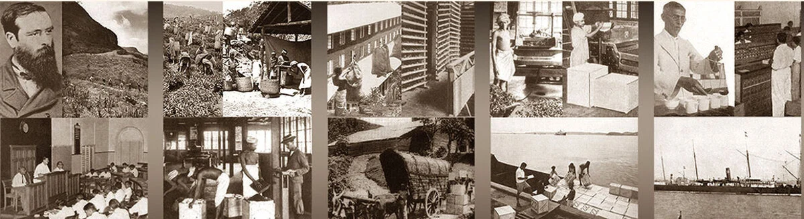

<!DOCTYPE html>
<html lang="en">

<head>
    <meta charset="UTF-8">
    <meta name="description" content="Sri Lankan Tea Industry">
    <meta name="keywords" content="Ceylon Tea,Sri Lankan Tea,Tea Sri Lanka">
    <meta name="author" content="Praveen Matharage">
    <meta name="viewport" content="width=device-width, initial-scale=1">
    <link rel="stylesheet" href="css/style.css">
    <link rel="stylesheet" href="css/normalize.css">
    <!----------------------------------mainfest-icon---------------------------------->
    <link rel="apple-touch-icon" sizes="180x180" href="images/mainfest-icon/apple-touch-icon.png">
    <link rel="icon" type="image/png" sizes="32x32" href="images/mainfest-icon/favicon-32x32.png">
    <link rel="icon" type="image/png" sizes="16x16" href="images/mainfest-icon/favicon-16x16.png">
    <link rel="manifest" href="images/mainfest-icon/site.webmanifest">
    <link rel="mask-icon" href="images/mainfest-icon/safari-pinned-tab.svg" color="#5bbad5">
    <link rel="shortcut icon" href="images/mainfest-icon/favicon.ico">
    <meta name="msapplication-TileColor" content="#da532c">
    <meta name="msapplication-config" content="images/mainfest-icon/browserconfig.xml">
    <meta name="theme-color" content="#ffffff">
    <title>Sri Lankan Tea Industry</title>
</head>

</html>

<body>
    <main class="container">
        <header id="home">
            <!-------------------------------------Go TO The Top button------------------------------------------------------------------------------------------------------------------------------------------------------>
            <a href="#" class="totop"></a>
            <!-------------------------------------Main Nav Panel and Topic Area------------------------------------------------------------------------------------------------------------------------------------------------------>
            <div class="background-image">

                

                <nav class="video-nav">
                    <a href="index.html"></a>
                    <ul>
                        <li class="active"><a href="index.html">Home</a></li>
                        <li><a href="ceylon-tea-museum.html">Museum</a></li>
                        <li><a href="tea-plantation-of-sri-lanka.html">Tea Plantation</a></li>
                        <li><a href="by-products-of-tea.html">By Products Of Tea</a></li>
                        <li><a href="purchase-and-donations.html">Purchase and Donate</a></li>
                        <li><a href="sales1.html">Tea sales</a></li>
                    </ul>
                </nav>

                <div class="video-overlay">
                    <div class="video-page-topic">
                        <h1>Sri Lankan Tea Industry</h1>
                        <a href="#article">Explore</a>
                    </div>
                </div>
            </div>
        </header>
        <!-------------------------------------Page Content------------------------------------------------------------------------------------------------------------------------------------------------------>

        <article id="article">
            
            <section class="first-para-home">
                <p>Sri Lankan tea known for eras as “Ceylon Tea” is presumed for its’ taste and smell world over.
                    Sri
                    Lanka is the biggest maker of conventional tea within the world. As of now, Sri Lanka positions
                    as
                    the fourth biggest tea producer of the world. Within the worldwide trade front, the nation holds
                    the
                    position of third biggest exporter of tea.</p><br>
            </section>
            <section class="section1">
                <h2>The Industry</h2>
                <div class="section1para">
                    <p>Tea plantations started by the British were initially taken over by the government in 1960s, but
                        have
                        been privatized and managed by plantation companies. The total extent of land under tea
                        cultivation
                        has been assessed at approximately 231,628 hectares.</p><br>
                    <p>Ceylon tea from Sri Lanka, acclaimed as the best tea in the world has its inherent unique
                        characteristics and reputation running through more than a century. The influence of climatic
                        conditions of its plantation imparts to the product a variety of flavors and aromas, synonymous
                        with
                        quality.</p><br>
                    <p>Sri Lanka is renowned for its high quality tea and as the 4 th biggest tea producing country
                        globally, has a production share of 10% in the international sphere, and one of the world's
                        leading
                        exporters with a share of around 19% of the global demand.</p>
                </div>
                <br>
            </section>
            <section class="section2">
                <h2>Production</h2><br>
                <div class="section2para">
                    <p>Sri Lanka produces tea throughout the year and the total tea production is about 349,308 Tons per
                        annum. The total export volume reached 212,335 MT out of the total production in year 2018. The
                        tea
                        growing areas are mainly concentrated in the central highlands and southern inland areas of the
                        island. They are broadly grouped under these headings according to their elevations, with high
                        grown
                        ranging from 1200 m upwards, medium grown covering between 600 m. to 1200 m. and low grown from
                        sea
                        level up to 600 m.</p><br>
                    <p>Sri Lanka is the world largest producer of orthodox tea. The pioneer planters in Sri Lanka had
                        discovered the effect of the diverse climate on tea production. The discovery has resulted in
                        manufacturing of an array of fine teas which like wine are unique to each agro climatic district
                        in
                        Sri Lanka. Ceylon tea flavour and quality, vary with agro climatic conditions and seasons. The
                        prime
                        regions are Nuwara Eliya, Dimbula, Uva, Uda Pussellawa, Kandy, Ruhuna and Sabaragamuwa</p><br>
                    </div>
            </section>
            <section class="section3">
                <h2>Key Products and Varieties</h2><br>
                
                
                <div class="section3para">
                <p class="section3para">Sri Lanka mainly produced orthodox teas. In the orthodox process of production, semi dried green
                    shoots are ruptured and twisted by rolling achieved from a rotary movement. When tea leaves are
                    crushed an oxidation process begins, which is followed by firing and commonly known black tea is
                    produced.</p><br>
                <p>Sri Lanka also produces tea by unorthodox method, namely Cut Tear and Curl (C.T.C). Green tea,
                    Instant tea, Bio tea, and flavored tea are also produced in Sri Lanka.</p><br>
                <p>High grown teas from Sri Lanka are reputed for their taste and aroma. The two types of seasonal
                    tea
                    produced in these areas Dimbula and Nuwara Eliya are much sought after by blenders in tea
                    importing
                    countries.</p><br>
                <p>Exports of tea are being also sent for many destinations in various forms such as Tea Packets,
                    Tea
                    Bags, Tea in Bulk, Instant Tea, Green Tea, Flavored Tea etc</p>
                </div>
            </section>
            <section id="last-para-home">
                
                <h2>Supply Chain</h2><br>
                <ol>
                    <li>Commercial Cultivators</li>
                    <li>Individual Small Farmers</li>
                    <li>Cluster organizations</li>
                    <li>Central collecting centers</li>
                    <li>Processors</li>
                    <li>Exporters</li>
                    <li>Traders</li>
                </ol>
           
                <h2>Tea Customs of Sri Lanka</h2><br>
                <p>Sri Lankans are known to be pleasant and hospitable, and tea plays a major role in this part of
                    their
                    lives. Whoever steps into a house, is offered a tea and it is customary to accept. Even in the
                    hot
                    days, a tea is something you cannot say no to. Most of the time, tea will come coupled with
                    biscuits
                    or some other sweetmeat.</p><br>
                <p>In the rural areas, people gather at a tea shop, “thé kadé” to have a chat over tea. Some prefer
                    to
                    have just the tea, without sugar and eat a piece of jaggery simultaneously. Plain tea is the one
                    with sugar in it. Milk tea is available but in countryside the flavour and taste of pure black
                    tea
                    is preferred.</p><br>
                <p>Capital Colombo and a few more main cities have the comparatively new-found “coffee shops”, which
                    also offer tea. One can order iced tea and other specialty tea types at a coffee shop.</p>
                <p>Tea is a must for breakfast. Similar to India and Pakistan, Sri Lankans start the day with a tea,
                    and
                    drink yet another with breakfast. This practice varies from family to family rather than region
                    to
                    region. The afternoon tea time, no doubt inherited from the British when Sri Lanka was a colony,
                    is
                    still observed. Families gather in the kitchen or living room to nibble on a biscuit or two, and
                    have a tea. Other events such as New Year celebrations are joyous times which many sweetmeats
                    will
                    be prepared to adorn the tea table such as oil cake (“Kevum”/ “Athirasa”), Kokis, Aluwa,
                    Walithalapa, Aasmi and so much more.</p><br>
            </section>
        </article>

    </main>
    <!-------------------------------------Footer Area------------------------------------------------------------------------------------------------------------------------------------------------------>
    <footer class="footer">
        <div class="footer-background-container">
            <div class="row">
                <div class="footer-col">
                    <h4>Other Pages</h4>
                    <ul>
                        <li><a href="by-products-of-tea.html">By productsof Tea</a></li>
                        <li><a href="ceylon-tea-museum.html">Museum</a></li>
                        <li><a href="purchase-and-donations.html">Purchase and Donate</a></li>
                        <li><a href="tea-plantation-of-sri-lanka.html">Tea plantations of Sri Lanka</a></li>
                        <li><a href="sales1.html">Tea sales</a></li>
                        <li><a href="#">Home</a></li>
                    </ul>
                </div>
                <div class="footer-col">
                    <h4>Online Sales</h4>
                    <ul>
                        <li><a href="sales1.html">Tea sales</a></li>
                    </ul>
                </div>
                <div class="footer-col">
                    <h4>Contact us</h4>
                    <ul>
                        <li><a href="mailto:CB0107081@students.apiit.lk">Send Emails</a></li>
                    </ul>
                </div>
                <div id="copyright">
                    <h4>Copyright © Praveen Matharage 2022</h4>
                </div>
            </div>
        </div>
        
        <!----------------------------------------------------------Referencing---------------------------------------------------------------------->
    <!--‘Sri Lanka Tea Board Official Web Site’ (no date) ceylontea.gov.lk. [online]. Available from: http://ceylontea.gov.lk/.-->
    <!--‘Pure Ceylon Tea Brands, Suppliers, Manufacturers & Exporters in Sri Lanka’ (no date) www.srilankabusiness.com. [online]. Available from: https://www.srilankabusiness.com/tea/.-->
    <!--‘Tea Exporters Association Sri Lanka’ (no date) Tea Exporters Association. [online]. Available from: https://teasrilanka.org/ceylon-tea.-->
    <!--Hit Sri Lanka (2021) Tea Industry In Sri Lanka [Online] Available from: https://www.hitsrilanka.com/tea-industry-in-sri-lanka/ [19th July 2021]-->
    <!--Export Development Board Sri Lanka (2022) Ceylon Industry Capability [Online] Available from: https://www.srilankabusiness.com/tea/about-tea/industry-capability.html [20th July 2022]-->

    </footer>
</body>